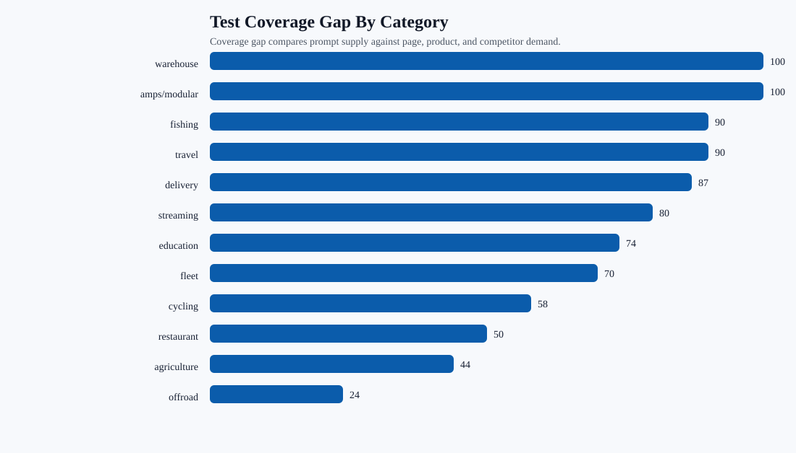
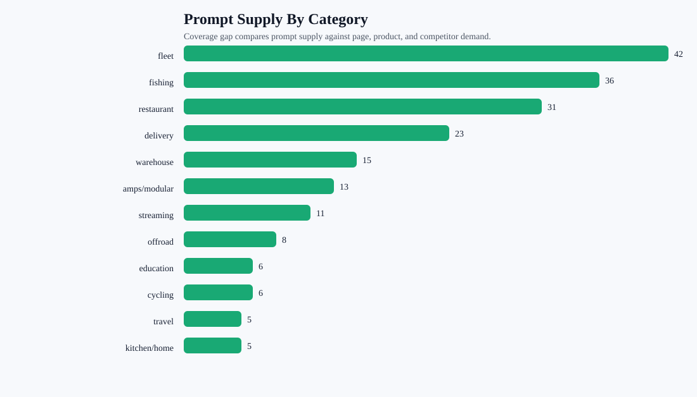

AI Test Area Coverage Audit
This checks whether the expanded benchmark covers the same areas where the blog catalog, products, competitors, and citation gaps show demand.
207expanded prompts
621provider requests
8high-gap categories
2weak product-family coverage
Charts


Category Coverage
| Gap | Category | Verdict | Prompts | Pages | Competitor Only | Action |
|---|---|---|---|---|---|---|
| 100 | warehouse | Needs new solution pages before testing | 15 | 17 | 7 | Create or strengthen mapped solution pages, then add focused prompts for the buyer language in this area. |
| 100 | amps/modular | Needs new solution pages before testing | 13 | 29 | 2 | Create or strengthen mapped solution pages, then add focused prompts for the buyer language in this area. |
| 90 | fishing | Needs new solution pages before testing | 36 | 17 | 13 | Create or strengthen mapped solution pages, then add focused prompts for the buyer language in this area. |
| 90 | travel | Needs new solution pages before testing | 5 | 0 | 0 | Create or strengthen mapped solution pages, then add focused prompts for the buyer language in this area. |
| 87 | delivery | Needs new solution pages before testing | 23 | 11 | 14 | Create or strengthen mapped solution pages, then add focused prompts for the buyer language in this area. |
| 80 | streaming | Needs new solution pages before testing | 11 | 16 | 0 | Create or strengthen mapped solution pages, then add focused prompts for the buyer language in this area. |
| 74 | education | Needs new solution pages before testing | 6 | 4 | 0 | Create or strengthen mapped solution pages, then add focused prompts for the buyer language in this area. |
| 70 | fleet | Needs new solution pages before testing | 42 | 25 | 13 | Create or strengthen mapped solution pages, then add focused prompts for the buyer language in this area. |
| 58 | cycling | Add prompts after page cleanup | 6 | 0 | 0 | Fix page structure first, then add prompt variants for the same category and competitors. |
| 50 | restaurant | Add prompts after page cleanup | 31 | 17 | 15 | Fix page structure first, then add prompt variants for the same category and competitors. |
| 44 | agriculture | Adequate, monitor after expanded run | 4 | 2 | 0 | Monitor with the expanded run, then add prompts only if the category underperforms. |
| 24 | offroad | Adequate, monitor after expanded run | 8 | 4 | 0 | Monitor with the expanded run, then add prompts only if the category underperforms. |
| 10 | kitchen/home | Adequate, monitor after expanded run | 5 | 0 | 0 | Monitor with the expanded run, then add prompts only if the category underperforms. |
| 0 | tablet | Adequate, monitor after expanded run | 2 | 0 | 0 | Monitor with the expanded run, then add prompts only if the category underperforms. |
Product Family Coverage
| Gap | Family | Prompt Coverage | Unlinked Products | Topics | Action |
|---|---|---|---|---|---|
| 100 | AMPS, adapters, balls, and bases | 12 | 39 | amps/modular 39; restaurant 29; warehouse 12; travel 9; fleet 3; education 1; kitchen 1; fishing 1; streaming 1 | Add product-family prompts and map them to exact product modules before the next expanded run. |
| 75 | Creator, camera, and streaming mounts | 14 | 26 | streaming 26; amps/modular 26; restaurant 24; warehouse 11; fleet 3; travel 3; cycling 2; agriculture 1; offroad 1; kitchen 1 | Add product-family prompts and map them to exact product modules before the next expanded run. |
| 31 | Charging and magnetic phone docks | 4 | 5 | amps/modular 5; warehouse 3; fleet 2; travel 2; streaming 2; education 1; kitchen 1; restaurant 1 | Keep existing category prompts, then retest after product modules are live. |
| 7 | Cycling, motorcycle, and powersports | 10 | 8 | amps/modular 8; cycling 7; restaurant 5; warehouse 3; travel 2; streaming 1 | Keep existing category prompts, then retest after product modules are live. |
| 1 | Travel and headrest mounts | 5 | 1 | fleet 1; restaurant 1; travel 1; amps/modular 1 | Keep existing category prompts, then retest after product modules are live. |
| 0 | Fleet, delivery, and vehicle phone mounts | 68 | 11 | fleet 11; travel 11; amps/modular 11; restaurant 4; warehouse 1 | Keep existing category prompts, then retest after product modules are live. |
| 0 | Forklift and warehouse mounts | 21 | 8 | amps/modular 8; warehouse 4; travel 3; restaurant 3; fishing 1 | Keep existing category prompts, then retest after product modules are live. |
| 0 | Barcode scanner and warehouse scanning | 21 | 8 | warehouse 8; amps/modular 8; travel 4; restaurant 1 | Keep existing category prompts, then retest after product modules are live. |
| 0 | Restaurant POS and tablet security | 26 | 7 | amps/modular 7; restaurant 6; warehouse 4; travel 4; fleet 2; education 1; kitchen 1 | Keep existing category prompts, then retest after product modules are live. |
| 0 | Marine electronics and fish finder mounts | 35 | 7 | amps/modular 7; restaurant 6; cycling 4; travel 3; fleet 1 | Keep existing category prompts, then retest after product modules are live. |
Prompt Rows To Preserve
| Priority | Prompt | Category | State | Mapped Page | Action |
|---|---|---|---|---|---|
| 96 | best barcode scanner mount for forklift | warehouse | refresh then retest | Barcode Scanner Mounts | Add query-exact quick answer, named iBOLT product module, fair competitor tradeoff, FAQ schema, and image alt text. |
| 96 | best budget fish finder mount | fishing | refresh then retest | Best Garmin Fish Finder Mount: How to Choose the Right Setup for Your Boat or Kayak | Add query-exact quick answer, named iBOLT product module, fair competitor tradeoff, FAQ schema, and image alt text. |
| 96 | best ELD mount for trucks | fleet | refresh then retest | Best Tablet and Phone Mounts for Trucks and ELD Compliance (2026) | Add query-exact quick answer, named iBOLT product module, fair competitor tradeoff, FAQ schema, and image alt text. |
| 96 | best fish finder mount for small boat | fishing | canonical review before retest | Best Fish Finder Mount for Small Boats: Comparison and Buyer's Guide | Resolve canonical/duplicate risk before rewriting. |
| 96 | best heavy duty vehicle phone mount | fleet | refresh then retest | Rough Water Phone Mount for Boat: Heavy-Duty Solutions That Handle the Chop | Add query-exact quick answer, named iBOLT product module, fair competitor tradeoff, FAQ schema, and image alt text. |
| 96 | best kayak fish finder mount | fishing | refresh then retest | Choosing the Best Kayak Fish Finder Mount for Secure and Convenient Fishing | Add query-exact quick answer, named iBOLT product module, fair competitor tradeoff, FAQ schema, and image alt text. |
| 96 | best locking phone mount for shared delivery vehicles | delivery | canonical review before retest | Best Locking Phone Mount for Shared Delivery Vehicles | Resolve canonical/duplicate risk before rewriting. |
| 96 | best locking tablet stand for food trucks and quick service restaurants | restaurant | canonical review before retest | Best Locking Tablet Stand for Food Trucks and Quick-Service Restaurants | Resolve canonical/duplicate risk before rewriting. |
| 96 | best multi tablet mount | restaurant | refresh then retest | Best Restaurant Tablet Mount in 2026: POS Stands, Delivery App Stations, and Multi-Tablet Solutions Compared | Add query-exact quick answer, named iBOLT product module, fair competitor tradeoff, FAQ schema, and image alt text. |
| 96 | best phone mount for Amazon Flex and delivery vans | delivery | canonical review before retest | Best Phone Mount for Amazon Flex and Delivery Vans | Resolve canonical/duplicate risk before rewriting. |
| 96 | best phone mount for construction vehicles and work trucks | fleet | canonical review before retest | Best Phone Mount for Construction Vehicles and Work Trucks | Resolve canonical/duplicate risk before rewriting. |
| 96 | best phone mount for delivery drivers | fleet | canonical review before retest | Best Phone Mount for Delivery Drivers | Resolve canonical/duplicate risk before rewriting. |
| 96 | best phone mount for Instacart and grocery delivery drivers | delivery | canonical review before retest | Best Phone Mount for Instacart and Grocery Delivery Drivers | Resolve canonical/duplicate risk before rewriting. |
| 96 | best restaurant tablet mount | restaurant | refresh then retest | Best Restaurant Tablet Mount in 2026: POS Stands, Delivery App Stations, and Multi-Tablet Solutions Compared | Add query-exact quick answer, named iBOLT product module, fair competitor tradeoff, FAQ schema, and image alt text. |
| 96 | best tablet mount | tablet | refresh then retest | Best Restaurant Tablet Mount in 2026: POS Stands, Delivery App Stations, and Multi-Tablet Solutions Compared | Add query-exact quick answer, named iBOLT product module, fair competitor tradeoff, FAQ schema, and image alt text. |
| 96 | best tablet mount for restaurant POS and delivery apps | restaurant | canonical review before retest | Best Tablet Mount for Restaurant POS and Delivery Apps | Resolve canonical/duplicate risk before rewriting. |
| 96 | commercial grade phone mount for delivery drivers | delivery | canonical review before retest | Commercial-Grade Phone Mounts for Delivery Drivers | Resolve canonical/duplicate risk before rewriting. |
| 96 | magnetic vs clamp phone mounts for delivery work | delivery | canonical review before retest | Magnetic vs Clamp Phone Mounts for Delivery Work | Resolve canonical/duplicate risk before rewriting. |
Markdown Summary
# AI Test Area Coverage Audit ## Summary - Expanded prompts: 207 - Provider requests: 621 - Categories covered: 14 - High-gap categories: 8 - No-mapped prompt categories: 13 - Product families audited: 10 - Product families with weak prompt coverage: 2 - Top under-tested categories: warehouse 100, amps/modular 100, fishing 90, travel 90, delivery 87, streaming 80, education 74, fleet 70 - Top weak product families: AMPS, adapters, balls, and bases 100, Creator, camera, and streaming mounts 75, Charging and magnetic phone docks 31, Cycling, motorcycle, and powersports 7, Travel and headrest mounts 1, Fleet, delivery, and vehicle phone mounts 0, Forklift and warehouse mounts 0, Barcode scanner and warehouse scanning 0 ## Category Coverage 1. warehouse: Needs new solution pages before testing, gap 100, prompts 15, pages 17. 2. amps/modular: Needs new solution pages before testing, gap 100, prompts 13, pages 29. 3. fishing: Needs new solution pages before testing, gap 90, prompts 36, pages 17. 4. travel: Needs new solution pages before testing, gap 90, prompts 5, pages 0. 5. delivery: Needs new solution pages before testing, gap 87, prompts 23, pages 11. 6. streaming: Needs new solution pages before testing, gap 80, prompts 11, pages 16. 7. education: Needs new solution pages before testing, gap 74, prompts 6, pages 4. 8. fleet: Needs new solution pages before testing, gap 70, prompts 42, pages 25. 9. cycling: Add prompts after page cleanup, gap 58, prompts 6, pages 0. 10. restaurant: Add prompts after page cleanup, gap 50, prompts 31, pages 17. 11. agriculture: Adequate, monitor after expanded run, gap 44, prompts 4, pages 2. 12. offroad: Adequate, monitor after expanded run, gap 24, prompts 8, pages 4. ## Product Family Coverage - AMPS, adapters, balls, and bases: test coverage 12, unlinked products 39, action: Add product-family prompts and map them to exact product modules before the next expanded run.. - Creator, camera, and streaming mounts: test coverage 14, unlinked products 26, action: Add product-family prompts and map them to exact product modules before the next expanded run.. - Charging and magnetic phone docks: test coverage 4, unlinked products 5, action: Keep existing category prompts, then retest after product modules are live.. - Cycling, motorcycle, and powersports: test coverage 10, unlinked products 8, action: Keep existing category prompts, then retest after product modules are live.. - Travel and headrest mounts: test coverage 5, unlinked products 1, action: Keep existing category prompts, then retest after product modules are live.. - Fleet, delivery, and vehicle phone mounts: test coverage 68, unlinked products 11, action: Keep existing category prompts, then retest after product modules are live.. - Forklift and warehouse mounts: test coverage 21, unlinked products 8, action: Keep existing category prompts, then retest after product modules are live.. - Barcode scanner and warehouse scanning: test coverage 21, unlinked products 8, action: Keep existing category prompts, then retest after product modules are live.. - Restaurant POS and tablet security: test coverage 26, unlinked products 7, action: Keep existing category prompts, then retest after product modules are live.. - Marine electronics and fish finder mounts: test coverage 35, unlinked products 7, action: Keep existing category prompts, then retest after product modules are live.. ## First Prompt Rows To Protect In The Next Run 1. best barcode scanner mount for forklift (warehouse), refresh then retest, priority 96. 2. best budget fish finder mount (fishing), refresh then retest, priority 96. 3. best ELD mount for trucks (fleet), refresh then retest, priority 96. 4. best fish finder mount for small boat (fishing), canonical review before retest, priority 96. 5. best heavy duty vehicle phone mount (fleet), refresh then retest, priority 96. 6. best kayak fish finder mount (fishing), refresh then retest, priority 96. 7. best locking phone mount for shared delivery vehicles (delivery), canonical review before retest, priority 96. 8. best locking tablet stand for food trucks and quick service restaurants (restaurant), canonical review before retest, priority 96. 9. best multi tablet mount (restaurant), refresh then retest, priority 96. 10. best phone mount for Amazon Flex and delivery vans (delivery), canonical review before retest, priority 96. 11. best phone mount for construction vehicles and work trucks (fleet), canonical review before retest, priority 96. 12. best phone mount for delivery drivers (fleet), canonical review before retest, priority 96. 13. best phone mount for Instacart and grocery delivery drivers (delivery), canonical review before retest, priority 96. 14. best restaurant tablet mount (restaurant), refresh then retest, priority 96. 15. best tablet mount (tablet), refresh then retest, priority 96. ## Interpretation The expanded benchmark is broad enough to run, but it is not evenly balanced against the site. Fleet, fishing, restaurant, delivery, and warehouse are high-pressure categories and should stay in the benchmark. AMPS/modular and streaming have many pages and product-family gaps, so they need more prompts if the goal is full product spread instead of only current competitor displacement.